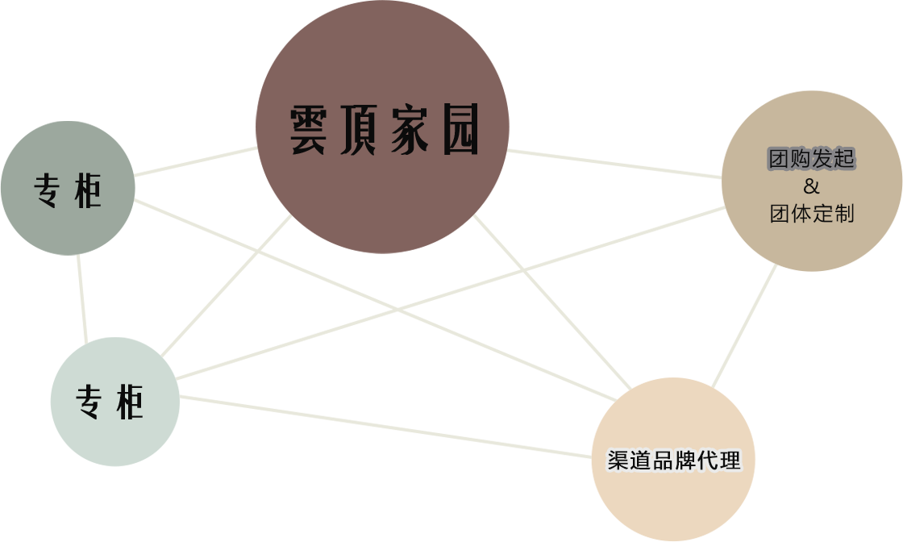

50多亩绿色生态雲頂莊園，集古法 制茶、改良发酵、开放厂房、成分 提升科研中心于一体，全面打造康 养熟茶品牌。
- 特定布朗山、困鹿山独特优异普洱
茶原料，正宗高端茶叶，确保茶品质。
- 专一古树发酵熟茶营养成分提升，
科研精制出品康养好熟普。
- 专业熟茶专家，先进的科研人才，
为熟茶精品品质保驾护航。
首创雲頂莊園模式，整合联盟运作，
开拓广阔市场空间。
全线传播支持，康养顾问辅助，主
动出击，拉动市场销售。
健康轻养生生活方式，关注超9亿亚健康人群，依托养生日常。
- 团队市场开拓支持：雲頂营销中心帮助建设
团队（人员培训、货品陈列），协同区域市
场开拓，解决销售实际问题。
- 专业顾问式品牌活动策划、市场策划支持。
- 针对性区域传播规划，多路媒体传播支持。
- 极具吸引力的宣传物料及服务体验式推广手
段指导。
- 经验丰富市场专员，辅助市场开发，拉动区
域销售。
- 雲頂家园所在区域拥有渠道品牌、专柜等实
体销售渠道开发权，分享下辖渠道利润分成。
- 返点奖励：完成销售任务与超额完成销售任
务均有返利。
- 统一定价，统一配送，不压货无保证金，减
少合作商在储运设备上的投入，将库存降到
最低度。
- 资源最优配置，实行免费退换货，支持合作
伙伴多样化发展，无品牌排他性。
雲頂莊園销售渠道以大茶产业内异类联盟、跨界异业联盟为基础，以茶体验专柜，养生领域、品味生活消费市场及 服务体验集成的店中专柜形式构成。
【 雲頂家园 】雲頂家园区域开发独享模式，与雲頂营销中心一同开发区域市场，提供顾问服务，拥有本区域渠道品牌 发展权利，共享所在区域利润，是雲頂莊園核心营销分部。
【 渠道品牌代理 】渠道品牌代理归属区域雲頂家园开发范畴，是雲頂核心营销体系重要销售商。渠道品牌代理行业选 择包括茶饮行业、康养生活市场、品质生活市场及其他目标市场重叠的可渗透行业。
【 专柜 】专业设计团队针对店铺商场实地情况，提供雲頂滇臻號品牌形象专柜设计及氛围布置。
【 团购发起及团体定制 】个人及团队都可以发起雲頂普洱的团购，享受团购服务及优惠。团体定制，可以根据团体 需求，量身定制产品包装。
【 顾问营销专员 】
- 拥有一定的资金实力，能够按照雲頂标准进行店面运营（专营店/店中店形式）。
- 热爱茶行业，拥有对雲頂品牌的信心，并能用心经营。
- 具有良好的商业信誉，诚实守信，遵守行业规范。
- 具有良好的社会资源和人脉关系，熟悉当地销售网络。
- 愿意和雲頂一起成长，共享财富盛宴。
| 康养熟普全国共享热线 | 400-0044-488 |
| 康养服务中心 | 0592-5990900 |
| 意向邮件投递 | yundingpuer@163.com |
| 官方网站 | www.yundingchaye.com |